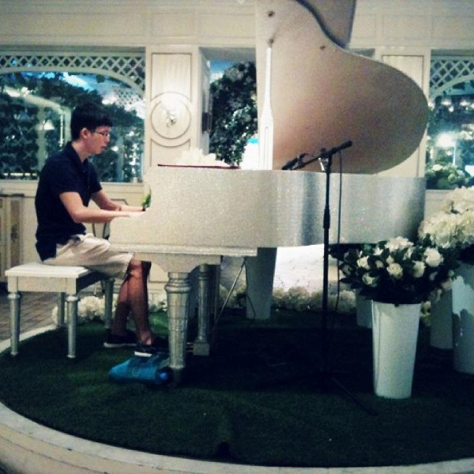
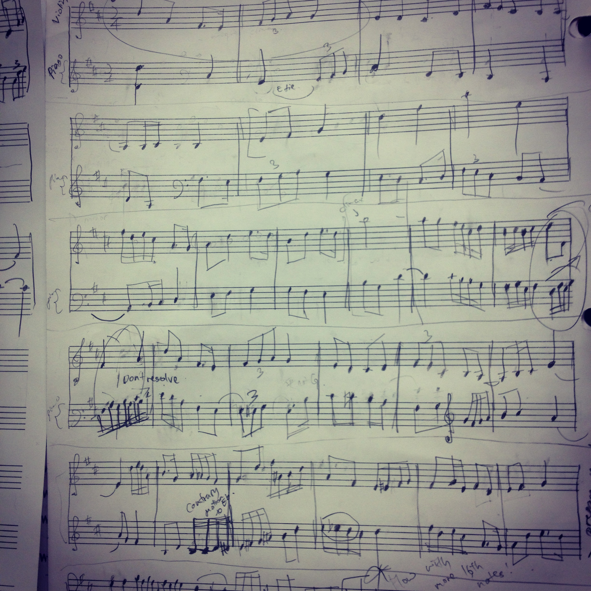
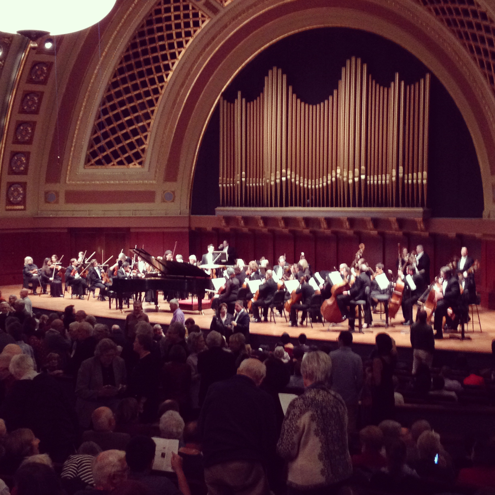
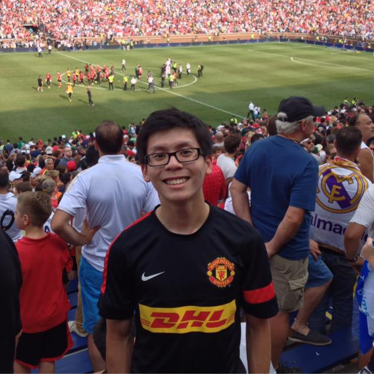

Music

My earliest memory of the piano was a trip with my family to a music school to explore music lessons for my younger sister. While not the intended participant, my eight-year-old self pestered my parents to let me enroll as well. Since then, I took piano lessons for more than 10 years, cultivating a love-hate relationship with the piano throughout that period—I loved the sounds that a piano makes when played by a skilled musician, but I hated practicing. Thanks to my parents' and teacher's unwavering commitment in ensuring I do my daily bit of practice, I managed to become a somewhat competent amateur pianist, with great appreciation for classical music and jazz.

My love for the piano (and classical music) grew after I arrived at the University of Michigan for my degree in mechanical engineering, where I completed a minor in music. In those years, I had the pleasure of studying composition and musicology from brilliant instructors—few of them are rather well-known—which provided an artistic outlet to counterbalance the stress of my engineering coursework. In fact, a highlight of mine as an undergraduate student was composing and conducting the closing ceremony performance for an annual sporting event, which involved multiple voices (instruments) and thematic sections.

Today, I still enjoy playing and practicing pieces on the piano, though not as frequently as I'd like. I also find time to attend classical music concerts, operas, and plays whenever possible. Though I'm quite keen about classical music overall, my preferred works often involve the piano (no surprises there)—especially piano concertos—from the Classical and Romantic eras. Also unsurprisingly, my favorite composers are Chopin and Mozart.
Compositions
This piece for piano and flute was for a composition course in my penultimate semester at the University of Michigan. This work, which is French for 'Sunflowers', was inspired by Vincent van Gogh's work of the same name, and is my personal favorite.
This work was written for the Malaysia Midwest Games Closing Ceremony - Midwest Night's opening performance. Using the theme of Johann Pachabel's Canon in D, I made a medley with some waltzy motives that combined the crowd-favourite tune with a Malay '90s hit pop song for the flute, alto saxophone, piano, two violins, and a drum. Due to my lack of knowledge in composing for the drum, the drum parts were instructed verbally instead with much involvement of the player's creativity.
This was my end-of-semester project in my first composition course, where we had to have our compositions performed, either by ourselves or by other musicians. I wrote this piece primarily to dedicate it to a person that I admired then, who is a great dancer. The harp and tenor saxophone was chosen as my two other voices in this project because I could only find a harpist and a saxist to perform with me.
This was my very first proper attempt in composition. Composed as my mid-semester project, I wrote this simple piece with much effort in attempting counterpoint melodies, which was the main goal of the project. I didn't have a title for it, but called it 'First Fall' when asked to by my professor, only because it was my very first fall semester at the University of Michigan.
Soccer

Growing up, my parents were quite strict about electronic entertainment. TV time was usually restricted to evenings, and leisure time during the day (after completing my homework) should be occupied with active, recreational sports whenever possible. Thus, I busied myself with pickup games at the neighborhood soccer field and basketball court. I eventually played enough soccer to make it my go-to sport, and further exposure to international matches on the TV intensified my passion for the sport. After arriving at the United States, I continued playing frequently, even winning a few intramural championships at UT Austin with the Soccer Kids team.